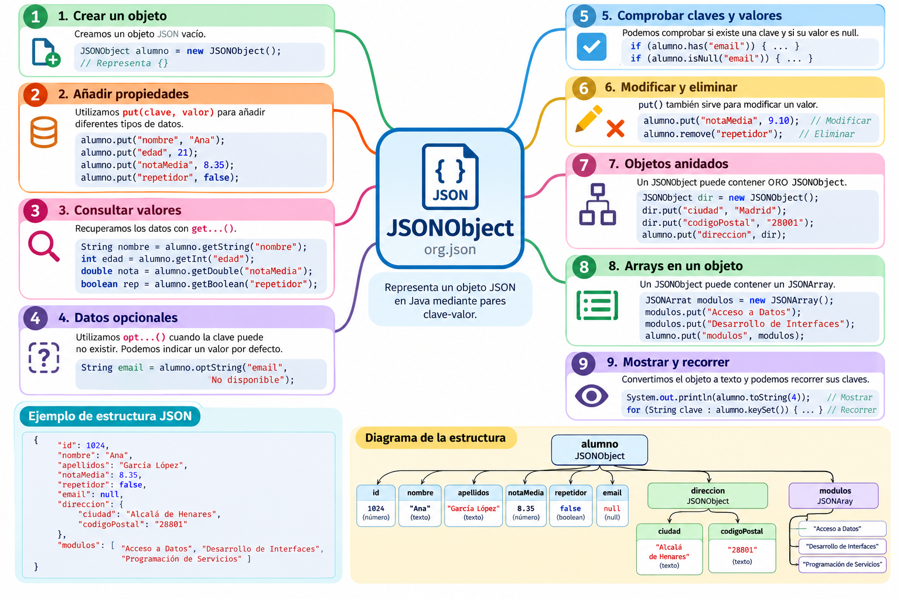

JSONObject¶
1. Introducción¶
JSONObject es una de las clases principales de la librería org.json.
Esta clase permite representar y manipular en Java un objeto JSON, es decir, una estructura formada por pares clave-valor.
Por ejemplo, el siguiente documento JSON representa los datos de un alumno:
{
"id": 1024,
"nombre": "Ana",
"apellidos": "García López",
"notaMedia": 8.35,
"repetidor": false
}
Cada dato está formado por una clave y un valor:
"nombre": "Ana"
↑ ↑
clave valor
En Java podremos representar este objeto mediante:
JSONObject alumno = new JSONObject();
y añadir sus propiedades utilizando el método put():
alumno.put("id", 1024);
alumno.put("nombre", "Ana");
alumno.put("apellidos", "García López");
alumno.put("notaMedia", 8.35);
alumno.put("repetidor", false);
De esta forma estamos construyendo en Java una estructura que puede representarse como JSON.
JSONObject representa un objeto JSON
Cuando en un documento JSON encontramos una estructura delimitada por llaves { }, estamos ante un objeto JSON.
Con la librería org.json, este tipo de estructura se representa mediante la clase JSONObject.
¿Qué aprenderemos?¶
A lo largo de esta sección aprenderemos a:
- crear objetos JSON;
- añadir propiedades mediante
put(); - trabajar con distintos tipos de valores;
- consultar valores mediante
get...()yopt...(); - comprobar si existen determinadas propiedades;
- trabajar con valores
null; - modificar y eliminar propiedades;
- crear objetos JSON anidados;
- incluir arrays dentro de un objeto;
- recorrer las propiedades de un objeto;
- convertir el objeto a texto mediante
toString().
2. Mapa general de JSONObject¶
El siguiente esquema resume las principales operaciones que podemos realizar con JSONObject y muestra cómo puede contener tanto datos simples como otros objetos y arrays.

Utiliza el mapa como guía
Puedes volver a este esquema durante la lección para situar cada una de las operaciones que iremos estudiando.
3. Estructura de un objeto JSON¶
Un objeto JSON se escribe entre llaves { } y contiene pares:
"clave": valor
Un JSONObject no tiene por qué contener únicamente datos sencillos.
Por ejemplo:
{
"id": 1024,
"nombre": "Ana",
"apellidos": "García López",
"notaMedia": 8.35,
"repetidor": false,
"email": null,
"direccion": {
"ciudad": "Alcalá de Henares",
"codigoPostal": "28801"
},
"modulos": [
"Acceso a Datos",
"Desarrollo de Interfaces",
"Programación de Servicios"
]
}
En este ejemplo encontramos diferentes tipos de valores:
| Clave | Valor | Tipo |
|---|---|---|
id |
1024 |
Número entero |
nombre |
"Ana" |
String |
apellidos |
"García López" |
String |
notaMedia |
8.35 |
Número decimal |
repetidor |
false |
Boolean |
email |
null |
Valor nulo |
direccion |
{ ... } |
Objeto JSON |
modulos |
[ ... ] |
Array JSON |
Podemos visualizar su estructura de esta forma:
alumno
│
├── id ────────────── número
├── nombre ────────── texto
├── apellidos ─────── texto
├── notaMedia ─────── número
├── repetidor ─────── boolean
├── email ─────────── null
│
├── direccion ─────── JSONObject
│ ├── ciudad
│ └── codigoPostal
│
└── modulos ───────── JSONArray
├── Acceso a Datos
├── Desarrollo de Interfaces
└── Programación de Servicios
JSON puede ser jerárquico
Un documento JSON no tiene por qué ser una colección plana de datos.
Un objeto puede contener otros objetos y arrays, lo que permite representar estructuras de información complejas.
4. Crear un JSONObject¶
Para utilizar JSONObject debemos importar la clase:
import org.json.JSONObject;
Después podemos crear un objeto vacío:
JSONObject alumno = new JSONObject();
En este momento alumno representa:
{}
Podemos comprobarlo:
System.out.println(alumno);
5. Añadir propiedades con put()¶
El método fundamental para construir un JSONObject es:
put(clave, valor)
Por ejemplo:
JSONObject alumno = new JSONObject();
alumno.put("id", 1024);
alumno.put("nombre", "Ana");
alumno.put("apellidos", "García López");
alumno.put("notaMedia", 8.35);
alumno.put("repetidor", false);
Observa que podemos añadir valores de diferentes tipos:
alumno.put("id", 1024); // int
alumno.put("nombre", "Ana"); // String
alumno.put("notaMedia", 8.35); // double
alumno.put("repetidor", false); // boolean
El resultado sería:
{
"id": 1024,
"nombre": "Ana",
"apellidos": "García López",
"notaMedia": 8.35,
"repetidor": false
}
Las claves son únicas¶
Cada propiedad de un objeto se identifica mediante una clave.
Si hacemos:
alumno.put("nombre", "Ana");
alumno.put("nombre", "Laura");
no tendremos dos propiedades llamadas nombre.
El segundo put() sustituye el valor anterior.
El resultado será:
{
"nombre": "Laura"
}
Una clave identifica una propiedad
Utilizar put() sobre una clave que ya existe sirve también para modificar su valor.
6. Mostrar un JSONObject¶
Podemos convertir el objeto a texto mediante:
alumno.toString()
Por ejemplo:
System.out.println(alumno.toString());
El resultado aparecerá en una única línea:
{"id":1024,"nombre":"Ana","apellidos":"García López","notaMedia":8.35,"repetidor":false}
Es JSON válido, pero puede resultar difícil de leer.
Podemos utilizar:
System.out.println(alumno.toString(4));
para obtener una representación indentada:
{
"id": 1024,
"nombre": "Ana",
"apellidos": "García López",
"notaMedia": 8.35,
"repetidor": false
}
El número 4 indica el número de espacios utilizados para la indentación.
Durante el desarrollo
toString(4) resulta especialmente útil para comprobar visualmente la estructura del JSON que estamos construyendo.
7. Recuperar datos: métodos get...()¶
Una vez creado el objeto podemos recuperar los valores almacenados.
Por ejemplo:
String nombre = alumno.getString("nombre");
Dependiendo del tipo de dato podemos utilizar distintos métodos:
int id = alumno.getInt("id");
String nombre = alumno.getString("nombre");
String apellidos = alumno.getString("apellidos");
double nota = alumno.getDouble("notaMedia");
boolean repetidor = alumno.getBoolean("repetidor");
Algunos métodos habituales son:
| Método | Devuelve |
|---|---|
getString() |
String |
getInt() |
int |
getLong() |
long |
getDouble() |
double |
getBoolean() |
boolean |
getJSONObject() |
JSONObject |
getJSONArray() |
JSONArray |
Por ejemplo:
System.out.println("Alumno: " + alumno.getString("nombre"));
System.out.println("Nota: " + alumno.getDouble("notaMedia"));
8. ¿Qué ocurre si una clave no existe?¶
Supongamos que intentamos acceder a:
String telefono = alumno.getString("telefono");
pero nuestro JSON no contiene una propiedad llamada:
"telefono"
Los métodos get...() esperan encontrar la propiedad solicitada.
Si la clave no existe, se producirá una excepción.
Por eso org.json proporciona también los métodos opt...().
9. Datos opcionales: métodos opt...()¶
Podemos escribir:
String telefono = alumno.optString("telefono");
También podemos proporcionar un valor predeterminado:
String telefono = alumno.optString("telefono", "No disponible");
Si la propiedad no existe:
System.out.println(telefono);
mostrará:
No disponible
Existen diferentes variantes:
optString()
optInt()
optLong()
optDouble()
optBoolean()
optJSONObject()
optJSONArray()
Por ejemplo:
int edad = alumno.optInt("edad", 0);
double nota = alumno.optDouble("notaMedia", 0.0);
boolean becado = alumno.optBoolean("becado", false);
get frente a opt¶
| Situación | Recomendación |
|---|---|
| El dato debe existir | get...() |
| El dato puede no existir | opt...() |
| Queremos un valor por defecto | opt...(clave, valor) |
get y opt expresan situaciones diferentes
Utilizamos get...() cuando esperamos que una propiedad exista.
Utilizamos opt...() cuando queremos contemplar que el dato pueda no estar presente.
10. Comprobar si existe una clave: has()¶
Podemos preguntar explícitamente si una propiedad existe mediante:
alumno.has("email")
Por ejemplo:
if (alumno.has("email")) {
System.out.println("El alumno tiene la propiedad email");
}
También podemos utilizarlo antes de recuperar un valor:
if (alumno.has("telefono")) {
System.out.println(alumno.getString("telefono"));
} else {
System.out.println("No se ha indicado teléfono");
}
Esto resulta útil cuando necesitamos realizar un tratamiento diferente dependiendo de la presencia de una propiedad.
11. Valores null¶
JSON permite representar explícitamente la ausencia de un valor:
{
"nombre": "Ana",
"email": null
}
Es importante distinguir entre:
{
"email": null
}
y:
{}
En el primer caso la propiedad email existe, pero su valor es null.
En el segundo caso la propiedad email no existe.
Con org.json podemos representar explícitamente un valor nulo JSON mediante:
alumno.put("email", JSONObject.NULL);
Podemos comprobarlo mediante:
if (alumno.isNull("email")) {
System.out.println("El email no tiene valor");
}
null no es lo mismo que propiedad inexistente
Una propiedad puede existir y contener un valor null.
Esto es diferente de que la propiedad no forme parte del objeto.
12. Modificar una propiedad¶
Para modificar una propiedad existente volvemos a utilizar put().
Por ejemplo:
alumno.put("notaMedia", 8.35);
Posteriormente podemos hacer:
alumno.put("notaMedia", 9.10);
El nuevo valor sustituirá al anterior.
No se crea una segunda propiedad notaMedia.
13. Eliminar una propiedad: remove()¶
Podemos eliminar una propiedad mediante:
alumno.remove("repetidor");
Si inicialmente tenemos:
{
"nombre": "Ana",
"notaMedia": 8.35,
"repetidor": false
}
después de ejecutar:
alumno.remove("repetidor");
tendremos:
{
"nombre": "Ana",
"notaMedia": 8.35
}
14. Objetos JSON dentro de otros objetos¶
Una de las características más importantes de JSON es que podemos introducir objetos dentro de otros objetos.
Por ejemplo:
{
"nombre": "Ana",
"direccion": {
"ciudad": "Alcalá de Henares",
"codigoPostal": "28801"
}
}
Para construir esta estructura primero creamos el objeto correspondiente a la dirección:
JSONObject direccion = new JSONObject();
direccion.put("ciudad", "Alcalá de Henares");
direccion.put("codigoPostal", "28801");
Después añadimos ese objeto al alumno:
alumno.put("direccion", direccion);
En este caso el valor asociado a la clave direccion no es un String.
Es otro:
JSONObject
La estructura puede visualizarse como:
JSONObject alumno
│
├── nombre → "Ana"
│
└── direccion → JSONObject
│
├── ciudad → "Alcalá de Henares"
└── codigoPostal → "28801"
15. Acceder a un objeto anidado¶
Para recuperar el objeto direccion podemos utilizar:
JSONObject direccionAlumno =
alumno.getJSONObject("direccion");
Después accedemos a sus propiedades:
String ciudad =
direccionAlumno.getString("ciudad");
String cp =
direccionAlumno.getString("codigoPostal");
También podríamos encadenar las llamadas:
String ciudad =
alumno.getJSONObject("direccion")
.getString("ciudad");
Primero, paso a paso
Cuando estamos aprendiendo suele resultar más claro recuperar primero el objeto interno:
```java JSONObject direccion = alumno.getJSONObject("direccion");
String ciudad = direccion.getString("ciudad"); ```
Una vez entendido el proceso podemos encadenar las operaciones.
16. Arrays dentro de un JSONObject¶
Un objeto JSON también puede contener arrays.
Por ejemplo:
{
"nombre": "Ana",
"modulos": [
"Acceso a Datos",
"Desarrollo de Interfaces",
"Programación de Servicios"
]
}
Para representar el array utilizaremos JSONArray:
import org.json.JSONArray;
Creamos el array:
JSONArray modulos = new JSONArray();
modulos.put("Acceso a Datos");
modulos.put("Desarrollo de Interfaces");
modulos.put("Programación de Servicios");
Y lo añadimos al objeto:
alumno.put("modulos", modulos);
La estructura será:
JSONObject alumno
│
├── nombre → "Ana"
│
└── modulos → JSONArray
│
├── [0] → "Acceso a Datos"
├── [1] → "Desarrollo de Interfaces"
└── [2] → "Programación de Servicios"
Estudiaremos JSONArray después
Aquí únicamente necesitamos comprender que un JSONArray puede formar parte de un JSONObject.
En la siguiente lección estudiaremos JSONArray con detalle.
17. Acceder a un array contenido en un objeto¶
Podemos recuperar el array mediante:
JSONArray modulos =
alumno.getJSONArray("modulos");
Después podemos acceder, por ejemplo, al primer elemento:
String primerModulo =
modulos.getString(0);
Recuerda que las posiciones de un array comienzan en:
0
18. Número de propiedades: length()¶
Podemos consultar cuántas propiedades contiene un objeto mediante:
alumno.length()
Por ejemplo:
System.out.println(
"Número de propiedades: " + alumno.length()
);
Si el objeto contiene:
{
"id": 1024,
"nombre": "Ana",
"notaMedia": 8.35
}
length() devolverá:
3
19. Recorrer las propiedades de un JSONObject¶
En algunas situaciones podemos encontrarnos con documentos JSON cuyas claves no conocemos previamente.
Podemos recorrerlas mediante keySet():
for (String clave : alumno.keySet()) {
Object valor = alumno.get(clave);
System.out.println(
clave + " -> " + valor
);
}
Por ejemplo, para:
{
"id": 1024,
"nombre": "Ana",
"notaMedia": 8.35
}
podríamos obtener una salida similar a:
id -> 1024
nombre -> Ana
notaMedia -> 8.35
¿Por qué utilizamos Object?
Cuando recorremos un JSON no sabemos necesariamente de antemano el tipo de cada valor.
Un valor podría ser un String, un número, un booleano, un JSONObject, un JSONArray, etc.
Por eso podemos recuperarlo inicialmente como Object.
20. Ejemplo completo¶
Vamos a reunir los conceptos anteriores en un único programa.
import org.json.JSONArray;
import org.json.JSONObject;
public class DemoJSONObject {
public static void main(String[] args) {
// Crear el alumno
JSONObject alumno = new JSONObject();
// Datos básicos
alumno.put("id", 1024);
alumno.put("nombre", "Ana");
alumno.put("apellidos", "García López");
alumno.put("notaMedia", 8.35);
alumno.put("repetidor", false);
// Valor null
alumno.put("email", JSONObject.NULL);
// Crear un objeto para la dirección
JSONObject direccion = new JSONObject();
direccion.put("ciudad", "Alcalá de Henares");
direccion.put("codigoPostal", "28801");
// Añadir la dirección al alumno
alumno.put("direccion", direccion);
// Crear un array de módulos
JSONArray modulos = new JSONArray();
modulos.put("Acceso a Datos");
modulos.put("Desarrollo de Interfaces");
modulos.put("Programación de Servicios");
// Añadir el array al alumno
alumno.put("modulos", modulos);
// Mostrar el JSON completo
System.out.println("JSON completo:");
System.out.println(alumno.toString(4));
// Recuperar datos simples
System.out.println(
"\nNombre: " + alumno.getString("nombre")
);
System.out.println(
"Nota media: " + alumno.getDouble("notaMedia")
);
// Recuperar un dato opcional
String telefono =
alumno.optString(
"telefono",
"No disponible"
);
System.out.println(
"Teléfono: " + telefono
);
// Recuperar el objeto dirección
JSONObject dir =
alumno.getJSONObject("direccion");
System.out.println(
"Ciudad: " + dir.getString("ciudad")
);
// Recuperar el array de módulos
JSONArray listaModulos =
alumno.getJSONArray("modulos");
System.out.println(
"Primer módulo: "
+ listaModulos.getString(0)
);
}
}
El JSON generado tendrá una estructura similar a:
{
"id": 1024,
"nombre": "Ana",
"apellidos": "García López",
"notaMedia": 8.35,
"repetidor": false,
"email": null,
"direccion": {
"ciudad": "Alcalá de Henares",
"codigoPostal": "28801"
},
"modulos": [
"Acceso a Datos",
"Desarrollo de Interfaces",
"Programación de Servicios"
]
}
21. Métodos principales¶
| Necesitamos... | Método |
|---|---|
| Crear un objeto | new JSONObject() |
| Añadir una propiedad | put() |
| Modificar una propiedad | put() |
| Obtener un texto | getString() |
| Obtener un entero | getInt() |
| Obtener un decimal | getDouble() |
| Obtener un booleano | getBoolean() |
| Obtener otro objeto | getJSONObject() |
| Obtener un array | getJSONArray() |
| Obtener un dato opcional | opt...() |
| Comprobar una clave | has() |
Comprobar null |
isNull() |
| Eliminar una propiedad | remove() |
| Número de propiedades | length() |
| Obtener las claves | keySet() |
| Convertir a texto | toString() |
| Mostrar indentado | toString(4) |
22. Errores frecuentes¶
Confundir una clave con su valor¶
Incorrecto:
alumno.getString("Ana");
Correcto:
alumno.getString("nombre");
Buscamos mediante la clave, no mediante el valor.
Utilizar un método de tipo incorrecto¶
Si tenemos:
{
"edad": 21
}
utilizaremos:
int edad = alumno.getInt("edad");
Debemos conocer el tipo de dato que esperamos recuperar.
Utilizar get...() para datos opcionales¶
Si telefono puede no existir, podemos utilizar:
String telefono =
alumno.optString(
"telefono",
"No disponible"
);
Confundir un objeto con un array¶
Esto:
{
"ciudad": "Madrid"
}
es un objeto.
Esto:
[
"Madrid",
"Barcelona"
]
es un array.
Por tanto:
{ } → JSONObject
[ ] → JSONArray
23. Esquema resumen¶
JSONObject
│
├── Crear
│ └── new JSONObject()
│
├── Añadir / modificar
│ └── put(clave, valor)
│
├── Consultar
│ ├── getString()
│ ├── getInt()
│ ├── getDouble()
│ ├── getBoolean()
│ ├── getJSONObject()
│ └── getJSONArray()
│
├── Datos opcionales
│ └── opt...()
│
├── Comprobar
│ ├── has()
│ └── isNull()
│
├── Eliminar
│ └── remove()
│
├── Inspeccionar
│ ├── length()
│ └── keySet()
│
├── Estructuras complejas
│ ├── JSONObject
│ └── JSONArray
│
└── Mostrar
├── toString()
└── toString(4)
Idea clave
JSONObject no se limita a almacenar unos cuantos pares clave-valor.
Puede representar una estructura jerárquica completa, incorporando otros objetos y arrays.
Esta capacidad para combinar JSONObject y JSONArray es la que nos permitirá construir documentos JSON similares a los que encontraremos en aplicaciones reales.
24. Ejemplos incluidos en el proyecto¶
Los ejemplos correspondientes a JSONObject están incluidos en el proyecto Maven descargable de org.json:
| Ejemplo | Contenido que practica |
|---|---|
DemoOrgJson.java |
Primer contacto con JSONObject y creación de un objeto JSON sencillo |
DemoJSONObject.java |
Tipos de datos, put(), get...(), modificación de valores y toString(4) |
JSONObjectOpcionales.java |
Datos opcionales con opt...(), comprobación con has(), valores null, isNull() y JSONObject.NULL |
JSONObjectAnidado.java |
Creación y acceso a objetos JSONObject anidados |
RecorrerJSONObject.java |
Recorrido de las propiedades mediante keySet() y recuperación de valores con get() |
Proyecto de ejemplos
Estos ejemplos forman parte del proyecto Maven común de org.json.
No es necesario descargar un proyecto diferente para cada apartado. El proyecto completo está disponible desde la página de Introducción a org.json y contiene todos los ejemplos que iremos utilizando durante el tema.